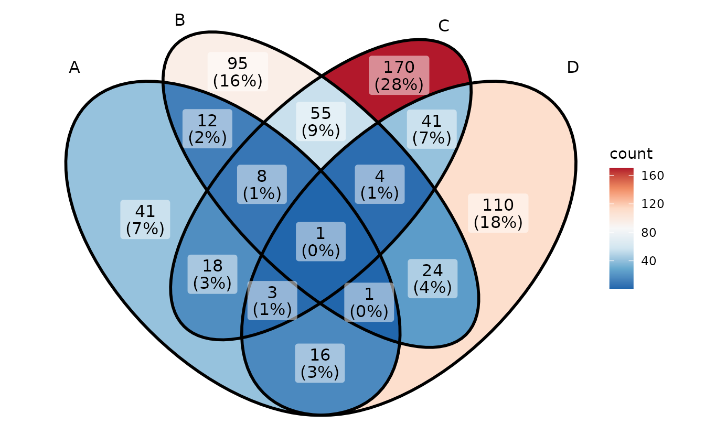
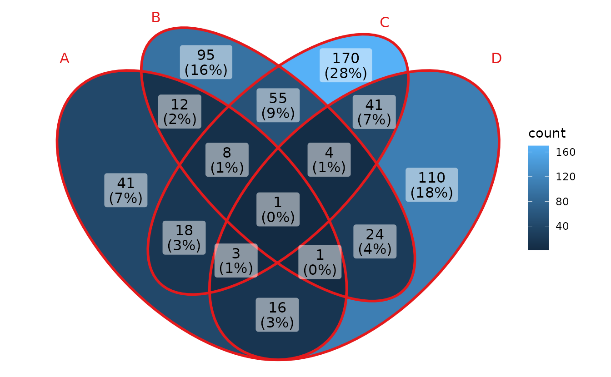
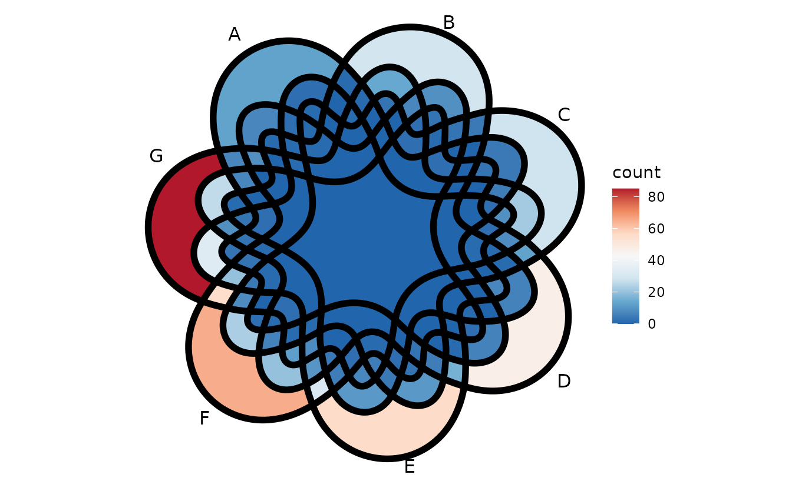
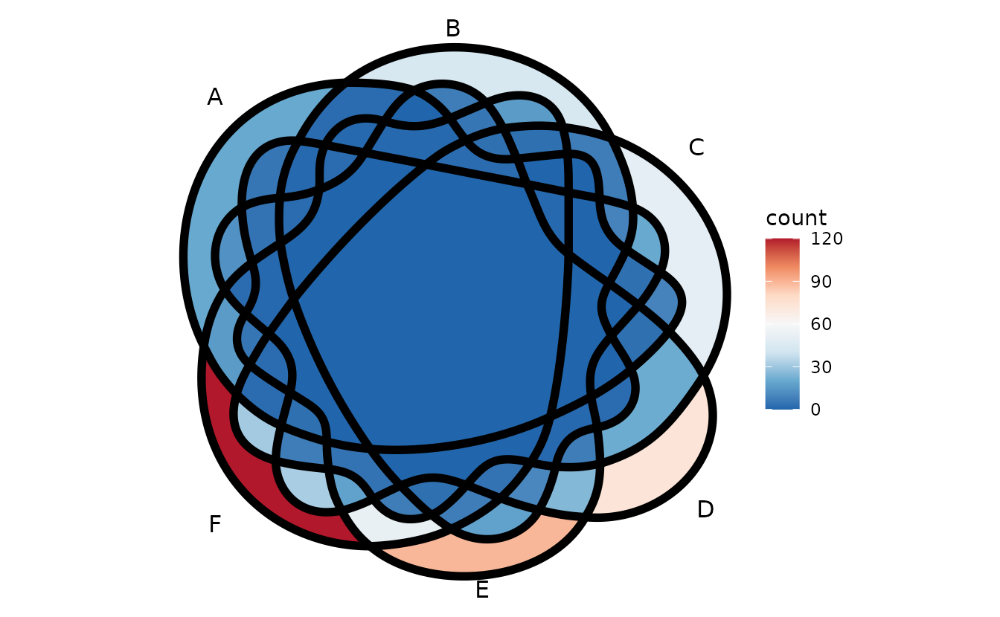
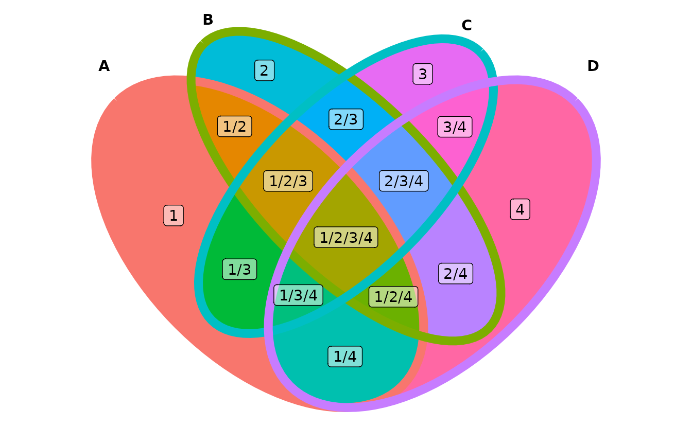

ggVennDiagram 是一个用于绘制 Venn 图的 R
语言软件包。软件发布在 GitHub 和 CRAN 上面。
该软件是一个广受赞誉的易于使用的、跨平台的、直观的、可定制的韦恩图绘制工具，在开源软件网站
GitHub 上，已经获得了超过 100 个小星星。

广受好评的ggVennDiagram
在 CRAN 上面也已经被累计下载了 2 万多次了。
ggVennDiagram 最早于 2019 年夏发布在作者的 GitHub
主页，后由 CRAN 收录。 2021 年，作者又系统调研了 R 环境中可用的 Venn
图绘制工具，博取众家之长，并增强了自己原有的特色和优势， 并发布为 1.1
版本。新版本的 ggVennDiagram
用起来更加方便，功能也更加强大，同时以后的扩展性也会非常好。 2023
年，作者又对代码进行了优化，将形状生成的代码迁移到了一个新的 R 包
shapeMageR，减少了 ggVennDiagram
的依赖，使其更容易安装和使用。
软件的安装
软件的安装与常规的 R 语言软件包相同。
如果要安装正式发布版，请使用下面的命令：
install.packages("ggVennDiagram")如果要安装开发版，请使用下面的命令：
# install.packages("devtools")
devtools::install_github("gaospecial/ggVennDiagram")使用示例
为了演示软件的使用，我们需要先生成一个示例数据：
genes <- paste0("gene",1:1000)
set.seed(20210502)
gene_list <- list(A = sample(genes,100),
B = sample(genes,200),
C = sample(genes,300),
D = sample(genes,200))
library(ggVennDiagram)设置集合标签的内容，颜色和大小
标签图层在最上面，不会被填充遮盖。但是如果是非常长的标签，可能会显示不完整。
此时只需要应用一个 ggplot2 函数即可。
ggVennDiagram(gene_list,
category.names = c("a very long name","short name","name","another name"),
set_color = c("red1","red2","red3","red4"),
set_size = 6) +
scale_x_continuous(expand = expansion(mult = .2))
显示区域中的成员
我们使用 plotly
对区域成员进行了可视化，现在鼠标悬停即可以查看区域成员。
同时，也支持将成员打印出来。
ggVennDiagram(gene_list,
show_intersect = TRUE)
#> Warning in geom_text(aes(label = .data$count, text = .data$item), data =
#> region_label): Ignoring unknown aesthetics: text设定区域标签的内容、颜色和大小
ggVennDiagram(gene_list,
label = "count",
label_color = "blue",
label_size = 4)
ggVennDiagram(gene_list,
label = "both",
label_percent_digit = 1,
label_size = 3)
设定椭圆的边
ggVennDiagram(gene_list,
edge_lty = "dashed",
edge_size = 1)换一个配色
填充色映射到不同的区域中。
ggVennDiagram(gene_list) +
scale_fill_distiller(palette = "RdBu")
线条颜色映射到不同的集合上。
ggVennDiagram(gene_list) +
scale_color_brewer(palette = "Set1")
更多维度的 Venn 图
通过导入另一个 R 包 venn 中的数据集，将 5-7 维度的 Venn
图画法移植了过来。
genes <- paste0("gene",1:1000)
set.seed(20210507)
x <- list(A = sample(genes,100),
B = sample(genes,150),
C = sample(genes,200),
D = sample(genes,250),
E = sample(genes,300),
F = sample(genes,350),
G = sample(genes,400))由于是用的不规则多边形，所以这些 Venn 图可能辨别起来会比较费劲，但是乍看上去还是蛮漂亮的。
ggVennDiagram(x, label = "none", edge_size = 2) +
scale_fill_distiller(palette = "RdBu")
ggVennDiagram(x[1:6], label = "none", edge_size = 2) +
scale_fill_distiller(palette = "RdBu")
ggVennDiagram(x[1:5], label = "none", edge_size = 2) +
scale_fill_distiller(palette = "RdBu")
自由定制
ggVennDiagram 将 Venn 图分为了 3
个部分，集合的标签，集合的边缘，集合的交叉， 分别称为
setLabel，setEdge 和
region。我们所做的主要工作是将繁琐的集合间计算
过程包装了起来（包括多边形区域的坐标及其对应成员的统计），并将计算的结果返回，
然后使用 ggplot 画图。
venn <- Venn(gene_list)
data <- process_data(venn)
ggplot() +
# 1. region count layer
geom_polygon(aes(X, Y, fill = count, group = id),
data = venn_regionedge(data)) +
# 2. set edge layer
geom_path(aes(X, Y, color = id, group = id),
data = venn_setedge(data),
show.legend = FALSE) +
# 3. set label layer
geom_text(aes(X, Y, label = name),
data = venn_setlabel(data)) +
# 4. region label layer
geom_label(aes(X, Y, label = count),
data = venn_regionlabel(data)) +
coord_equal() +
theme_void()
#> Joining with `by = join_by(id)`对于熟悉 ggplot
作图的用户来说，他完全可以任意定制作图的格式。
ggplot() +
# change mapping of color filling
geom_polygon(aes(X, Y, fill = id, group = id),
data = venn_regionedge(data),
show.legend = FALSE) +
# adjust edge size and color
geom_path(aes(X, Y, color = id, group = id),
data = venn_setedge(data),
linewidth = 3,
show.legend = FALSE) +
# show set label in bold
geom_text(aes(X, Y, label = name),
fontface = "bold",
data = venn_setlabel(data)) +
# add a alternative region name
geom_label(aes(X, Y, label = id),
data = venn_regionlabel(data),
alpha = 0.5) +
coord_equal() +
theme_void()
#> Joining with `by = join_by(id)`
新的 ggVennDiagram 更好用，更优雅。每一个绘制 Venn
图的朋友可能都会用得上。